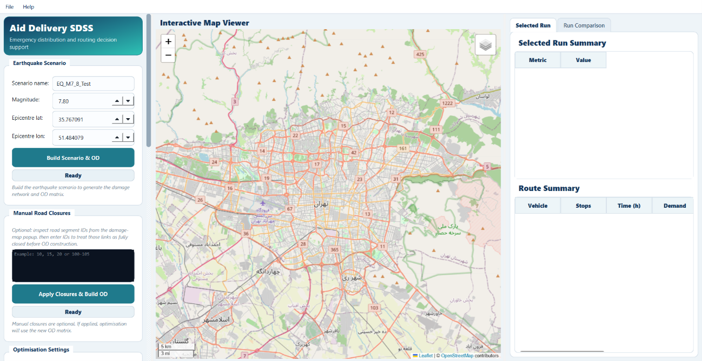
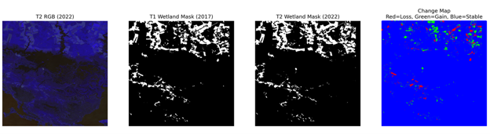
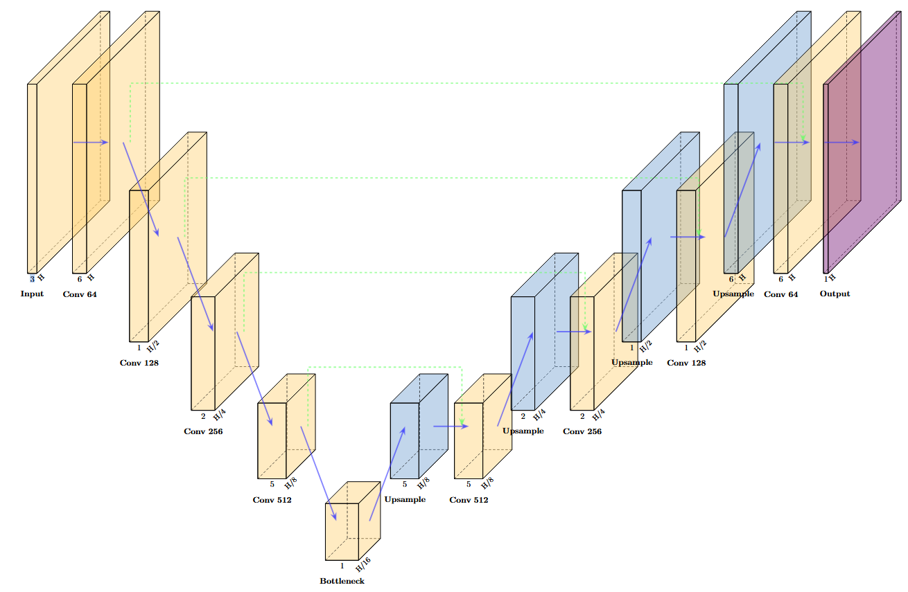
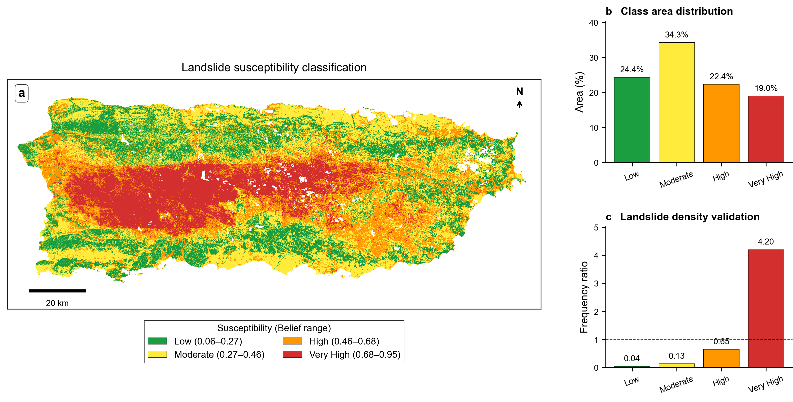

Selected research and applied geospatial projects.

Spatial Decision Support System integrating damage-aware travel time modelling with hybrid metaheuristic solvers (ACO, Tabu Search, Genetic Algorithm) for optimized delivery route planning.
GitHub
Transformer model on multi-temporal Sentinel-2 imagery detecting wetland loss at Blackwater NWR (F1 = 0.868), deployed as a Flask-Leaflet dashboard.
GitHub
Benchmarked U-Net, U-Net++, DeepLabV3+, and FPN on satellite water body data, establishing DeepLabV3+ as the top performer (IoU = 0.955).
GitHub
Evidence fusion integrating five XGBoost models across topographic, hydroclimatic, geological, soil, and land-cover data (ROC-AUC 0.914), with SHAP interpretability.
GitHubSentinel-2 spectral differencing with Random Forest classification for wildfire mapping (AUC = 0.998) in heterogeneous terrain in Iran.
GitHubCityGML-to-3D-Tiles with CesiumJS, Leaflet-PostGIS dashboards, WebAR geospatial apps, and a real-time AVL system with Django and Android.
GitHub